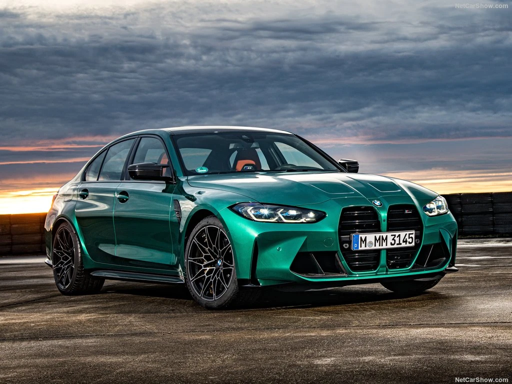

Bayerische Motoren Werke, kortweg BMW, (Nederlands: Beierse Motorfabrieken) is een Duitse onderneming die auto's en motorfietsen produceert. De onderneming is gevestigd in München.
Activiteiten
BMW is ook het moederbedrijf van Rolls-Royce Motor Cars, en produceert eveneens automobielen onder de naam Mini. In 2014 produceerde BMW voor het eerst in de bedrijfsgeschiedenis meer dan 2 miljoen voertuigen. In 2021 werden 2,5 miljoen voertuigen verkocht, waarvan 2,2 miljoen BMW's, 300.000 Mini's en 5600 luxewagens van Rolls-Royce.[1] Hiervan was 13,0% elektrische auto's van de typen BMWi, BMW iPerformance en MINI Electric vehicles (2017: 4,2%). Voor 2025 verwacht BMW dat dit aandeel zal zijn gestegen naar minimaal 30%.BMW verkoopt zijn motorfietsen onder de merknaam BMW Motorrad. In 2021 werkten er 119.000 mensen voor het bedrijf. In 2021 was de Volksrepubliek China veruit de belangrijkste afzetmarkt, hier werd een derde van de autoverkopen gerealiseerd. Duitsland stond op de derde plaats na de Verenigde Staten.[1] Deze drie landen namen bijna 60% van alle voertuigverkopen voor hun rekening. De meeste voertuigen werden in Duitse fabrieken gefabriceerd. In het Amerikaanse Spartanburg liepen 430.000 voertuigen van de lopende band, de Chinese joint venture BMW Brilliance Automotive leverde 700.000 voertuigen en VDL Nedcar in Born produceerde zo'n 105.000 MINI's